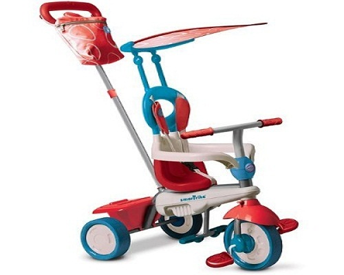

VitaLina+


Smart Trike Dream трёхколёсный велосипед 4 in 1, ванильный/ красный
Цена 109.00
• Описание товара
Велосипед поражает своей маневренностью и простотой управления, ведь повернуть его можно легким движением одной руки! Предназначенный для малышей от 10 месяцев до 3-ёх лет - Съемный козырек от солнца; - Легко маневрировать - Удлиненная рама и увеличенный страховочный обод - Регулируемые 3-х точечные ремни безопасности - Сидение со смягчением - Стильная багажная сумка - Складная подножка (съёмная) - Высокая спинка (съёмная) - Съемная корзина для игрушек - Подстаканник - Музыкальный игрушечный телефон - работает на 2 x AA батарейках (не входит в комплект) Вес: 8 кг Предупреждение! Рекомендуется использовать защитные аксессуары! Не предназначено для использования на проезжей части.